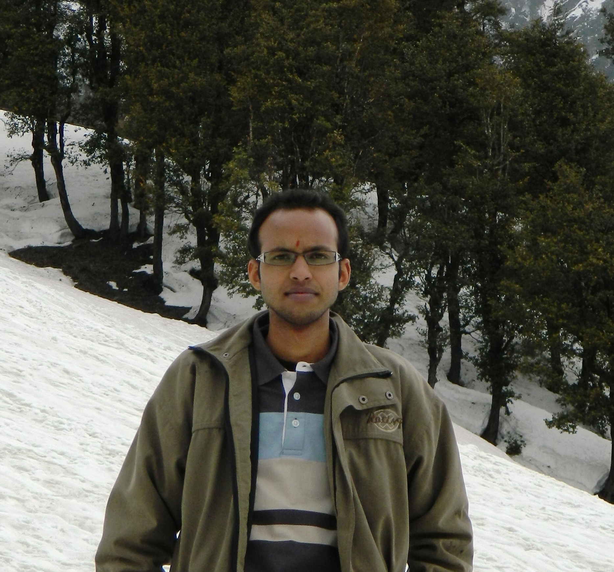

Dr. Srimanta Mandal

I am currently working as an Assistant Professor at Dhirubhai Ambani Institute of Information and Communication Technology, Gandhinagar. I have been a Post-Doctoral Fellow with Image Processing and Computer Vision (IPCV) Lab,
Department of Electrical Engineering, IIT Madras under the supervision of Prof. A. N. Rajagoplan. I have recieved my PhD from School of Computing and Electrical Engineering, IIT Mandi under the supervision of Dr. Anil K. Sao. Title of my PhD thesis is "Novel Approaches for Super Resolution of Intensity/Range Image using Sparse Representation".
I am from Arambagh (past city Asansol), West Bengal, India.